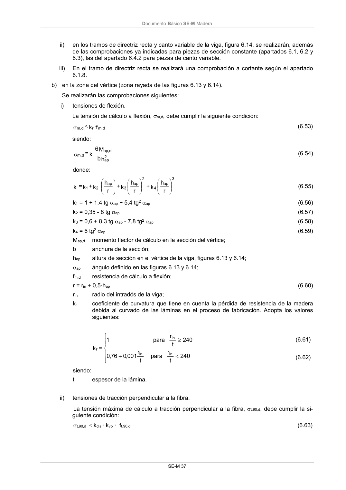

DB-SE-M · 6.4.4 Vigas con partes de su trazado curvadas. · versión 2019-12-20 · capa oficial
Formatos: JSON compacto · Markdown · PDF fuente
Ámbito del documento · texto del ámbito · documento y tablas
ID técnico a0090 · PDF pág. 42-44 · jerarquía no validada por persona · contrastado con el literal de la página 42 (candidato tipográfico); no validado por persona · padre: a0086
6.4.4 Vigas con partes de su trazado curvadas. 1 Este apartado se refiere a vigas cuyo alzado se corresponde con uno de los dos representados en las figuras 6.13 y 6.14. Se ejemplifica en casos simétricos en los que la zona de vértice, correspon- diente al trazado en curva, está en el centro. Figura 6.13 Viga curva de canto constante (la laminación es paralela a las caras) Figura 6.14 Viga a dos aguas con intradós curvo (la laminación se interrumpe en la zona del vértice, en el cambio de pendiente, pero no en las zonas próximas al intradós) Deben efectuarse las comprobaciones siguientes: a) en los tramos de directriz recta de la viga (exteriores a la zona del vértice): i) en los dos tramos de directriz recta y canto constante de la viga (figura 6.13), se realizarán las comprobaciones ya indicadas para piezas de sección constante (apartados 6.1, 6.2 y 6.3); DocumentoBásico SE-M Madera SE-M 37 ii) en los tramos de directriz recta y canto variable de la viga, figura 6.14, se realizarán, además de las comprobaciones ya indicadas para piezas de sección constante (apartados 6.1, 6.2 y 6.3), las del apartado 6.4.2 para piezas de canto variable. iii) En el tramo de directriz recta se realizará una comprobación a cortante según el apartado 6.1.8. b) en la zona del vértice (zona rayada de las figuras 6.13 y 6.14). Se realizarán las comprobacionessiguientes: i) tensiones de flexión. La tensión de cálculo a flexión, m,d, debe cumplir la siguiente condición: f· k d m, r d m, (6.53) siendo: h b M 6 k = 2 ap d ap, l d m, (6.54) donde: 3 ap 4 2 ap 3 ap 2 1 l r h k + r h k + r h k + k = k (6.55) k1 = 1 + 1,4 tg ap + 5,4 tg2ap (6.56) k2 = 0,35 - 8 tg ap (6.57) k3 = 0,6 + 8,3 tg ap - 7,8 tg2ap (6.58) k4 = 6 tg2ap (6.59) Map,d momento flector de cálculo en la sección del vértice; b anchura de la sección; hap altura de sección en el vértice de la viga, figuras 6.13 y 6.14; ap ángulo definido en las figuras 6.13 y 6.14; fm,d resistencia de cálculo a flexión; r = rin + 0,5·hap (6.60) rin radio del intradós de la viga; kr coeficiente de curvatura que tiene en cuenta la pérdida de resistencia de la madera debida al curvado de las láminas en el proceso de fabricación. Adopta los valores siguientes: 240 t r para t r 001 ,0 76 ,0 240 t r para 1 k in in in r (6.61) (6.62) siendo: t espesor de la lámina. ii) tensiones de tracción perpendicular a la fibra. La tensión máxima de cálculo a tracción perpendicular a la fibra, t,90,d, debe cumplir la si- guiente condición: t,90,d kdis · kvol · ft,90,d (6.63) DocumentoBásico SE-M Madera SE-M 38 siendo: b p · 6,0 bh M 6 k = d 2 ap d ap, p d t,90, (6.64) donde: pd carga distribuida (de compresión) aplicada en la zona de vértice sobre el borde superior de la viga; b ancho de la viga; M ap,d momento flector de cálculo en la sección de vértice; hap altura de la sección en el vértice de la viga, figuras 6.13 y 6.14. 2 ap 7 ap 6 5 p r h k + r h k + k = k (6.65) k5 = 0,2 tg ap (6.66) k6 = 0,25 - 1,5 tg ap + 2,6 tg2ap (6.67) k7 = 2,1 tg ap - 4 tg2ap (6.68) kvol factor de volumen definido en el apartado 2.1.1.2. En este caso, V, es el volumen, en m3, de la zona de vértice (figuras 6.13 y 6.14). Como valor máximo de V debe tomarse 2/3 del volumen total de la viga; V0 = 0,01 m3; kdis coeficiente de distribución que adopta los valores siguientes: kdis = 1,4 para la viga representada en la figura 6.13; kdis = 1,7 para la viga representada en la figura 6.14; ft,90,d resistencia de cálculo a tracción perpendicular a la fibra. ap in h· 5,0 r r 2 Además, debe realizarse la comprobación a cortante según el apartado 6.1.8.


PDF fuente redistribuible: copia fiel enlazada en esta página (SHA256 verificado).